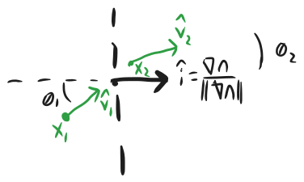

Rays in Glass = Newtonian Trajectories
The punchline of this article is that a Newtonian particle with initial velocity $v_0$ in a gravitational field $V(r)/m=-GM/r$ will follow the same path as a ray of light in a glass medium with index of refraction:
I find it nice that even though the inputs to the equations are nothing but Newtonian mechanics and the wave equation $n^2/c^2 \ddot{\phi}=\nabla^2\phi$, we find "relativistic" quantities like $mc^2$ (the relativistic mass-energy) and $2GM/c^2$ (the Schwarzschild radius of a black hole) in our equations! This correspondence isn't that deep--there are only so many quantities you can make with $|v_0|$, $c$, $GM$, $m$, and $|x|$--but it's still fun to see.
The Newtonian trajectory $\leftrightarrow$ light ray correspondence hinges on the following ray equation:
I derive it in three different ways: via Snell's law, via Fermat's principle, and finally using the eikonal equation.
Section 2 uses Snell's law to derive it, so it requires knowledge of vector calculus.
Section 3 uses Fermat's principle, so it requires knowledge of variational calculus.
Section 4 is the good stuff using the eikonal equation. So it really covers equations you'd use in a partial differential equations or mathematical methods of physics course. The tools in section 4 are very general, so in a separate post I cover the ray approximation for a whole host of different wave equations.
Table of Contents
- Description and motivation
- Derivation of ray optics using Snell's law in 3 dimensions
- Derivation of ray optics using Fermat's principle
- Derivation of ray optics using the Eikonal approximation
- Summary 5.1. Table of Results 5.2. Immediate applications 5.3. Remaining Questions
1. Description and motivation
This article was inspired by a youtube video by Huygens Optics, "Gravitational Index of Refraction", which compared the trajectories of particles in a gravitational field to the trajectories of rays of light in glass with a varying index of refraction $n$. The video used the formula $n(x)=1+GM/r$ but noted that this formula wasn't realistic.
It turns out that we can do better than just mimicking Newtonian particles: there's a precise correspondence between the trajectories of rays of light and the trajectories of Newtonian particles.
Firstly, imagine we have a medium with a varying index of refraction $n$ and we shine a ray of light into this medium. The ray will curve, reflect, and refract as $n$ changes. Really a ray of light consists of wave motion, but if the frequency is high enough then we won't be able to notice the wave properties and we can imagine the ray traces out a line in space. For convenience we'll ignore partial reflections, so "the path the ray takes" is really a single line. Total internal reflection is accounted for just fine, but partial reflections would involve the beam splitting in two, which I don't account for.
We can get this exact same line a different way. Take a Newtonian particle and place it at the starting point of the ray of light. The ray of light points in some direction $\hat{v}$, so we'll give our particle an initial velocity $\dot{x}=n c \hat{v}$ and imagine it travels in a potential $V(x)=-mc^2n^2/2$. With our carefully chosen initial conditions and potential, the Newtonian particle takes exactly the same path as the ray of light! It's enough to show that, with those definitions, the following equation holds:
You might think that I made a typo in writing $\dot{x}=n c \hat{v}$, because the actual velocity that light travels through a medium is $(c/n)\hat{v}$. But it's correct! What this means is that my time coordinate $t$ in $x(t)$ has units of time but does not correspond to the travel time of a ray of light. We need to choose $|\dot{x}|=nc$ in order to make the ray equation look like a Newtonian particle moving in a potential. We could also reparameterize the line and choose $|\dot{x}|=1$ to get arc-length parameterization or $|\dot{x}|=c/n$ to get travel time parameterization, but then our equations of motion are much uglier and don't look like a particle moving in a potential. I do this in section 3, but regardless of the parameterization we choose the shape of the curve $x(t)$ doesn't change.
A word on notation: things like $x$ and $v$ and $\nabla n$ are vectors, and I was able to stick to vector notation until the 4th section. In the 4th section, I use index notation, writing $\partial_i n$ instead of $\nabla n$ and the Einstein repeated index convention where $|\dot{x}|^2 = \dot{x}^i \dot{x}_i$. There is no difference between upper and lower indices, I just write it that way out of force of habit.
Derivation of ray optics using Snell's law in 3 dimensions
Let's consider a ray of light described by a curve $x(t)$. As noted above, $t$ doesn't have units of time. I define $|x'(t)|=nc$, which is equivalent to saying $t=\int \frac{\mathrm{ds}}{c n(x)}$ where $\mathrm{ds}$ is the arc length of the curve $x(t)$.
Consider two points on this curve separated by a "time" $\mathrm{dt}$, and the infinitesimal changes between these two points:
- The ray starts at position $x_1$ and moves to point $x_2=x_1+v_1\mathrm{dt}$.
- The velocity changes from $v_1=\dot{x}_1$ to $v_2=v_1+\ddot{x} \mathrm{dt}$.
- The index of refraction changes from $n_1$ to $n_2=n_1+\dot{x}_1\cdot\nabla n \mathrm{dt}$
This looks a bit like the light ray hit a surface where the index of refraction changed from $n_1$ to $n_2$, so let's apply Snell's law in that context to figure out the infinitesimal refraction of the light ray. This infinitesimal change in $v$ gives us an acceleration $\ddot{x}$.
The surface "normal" is $\hat{i}=\nabla n / |\nabla n|$, and our direction vectors are $\hat{v}_1$ and $\hat{v}_2$. We get something that looks like the following diagram:

Snell's law in 3D states:
The unit vectors $\hat{v}_1$ can be unwieldy to work with, so let's multiply both sides by $c$ and note that $c n_1 \hat{v}_1=v_1$ and $c n_2\hat{v}_2=v_2$. This only works out so simply because of our choice of $|v|$! Also, instead of dealing with $\hat{i}=\nabla n/|\nabla n|$ on both sides of the equation we might as well multiply through by $|\nabla n|$. Then Snell's law is:
We want to get a differential equation, so we should express $v_2$ in terms of $v_1$ and the acceleration:
Therefore, $\ddot{x}\times\nabla n=0$, so that $\ddot{x}$ is colinear with $\nabla n$. In other words $\ddot{x}=A\nabla n$ for some quantity $A$. This is great, we found the direction of $\ddot{x}$, now we just have to find the magnitude!
We can find $A$ by looking at how the velocity magnitude changes over time. One formula for the change in the magnitude of velocity is:
We could also expand this formula another way:
Setting these two expressions equal to each other, we find $A=n c^2$ and therefore:
The system that we found is equivalent to a Newtonian particle in a potential $V=-\frac{c^2}{2} n^2$.
Derivation of ray optics using Fermat's principle
Fermat's principle states that light travels along a trajectory that minimizes its travel time. If a light ray travels on a path $x(s)$ parameterized by some parameter $s$, then the total time taken will be
There are lots of choices we could make for how we parameterize the curve, but we again choose $|\dot{x}|=n c$.
Extremizing the travel time $T$ is a variational problem with Lagrangian $L(x,\dot{x},s)=|\dot{x}|n/c$. The Euler-Lagrange equations for this action can be worked out by judiciously replacing $|\dot{x}|$ with $nc$ where possible:
So our equation of motion is:
This traces out the exact same path as if we had a Newtonian particle with initial velocity $nc$ and let it travel in a potential $V(x)=-\frac{c^2 n^2}{2}$.
We can explore what happens when we choose other parameterizations. If we choose $|\dot{x}|=1$ get arc-length parameterization and our ordinary differential equation (ODE) is:
If we choose $t$ to be the actual travel time for light then we must choose $|\dot{x}|=c/n$. This gives:
So even though the travel time is the most natural choice for the $t$ coordinate, it gives a very ugly ODE!
Derivation of ray optics using the eikonal equation.
Deriving the eikonal equation
This approach to ray optics uses the wave equation as a starting point. Keep in mind that $x$ is a vector and $n$ is a function $n(x)$.
Recall that a wave moving in direction $\vec{p}$ can be described by a wave of the form $\exp(i(\omega t-\vec{p}\cdot\vec{x}))$. So we'll look for approximate solutions to the wave equation of the form $\phi=e^{i(\omega t-s(x))}$. If $s$ is real, then this describes a traveling wave whose direction changes but which has constant amplitude, and we can note that the local direction of the wave at some point $x$ is $p=\nabla s$. If we allow $s$ to have nonzero imaginary part, then this represents a change in the amplitude of the wavefunction. Fortunately, it will turn out that we can ignore the imaginary part of $s$.
Plugging $\phi$ into the wave equation gives:
So, writing $k^2=n^2 \omega^2/c^2$:
We only care about solving this equation in the large $\omega$ limit, so we're allowed to make all sorts of approximations and start omitting terms so long as our approximations remain self-consistent. This means that if we assume $|\nabla^2 s|\ll |\nabla s|^2$ and drop the second term on the righthand side, we'd better not solve our problem and come back to find that $|\nabla^2 s |\sim |\nabla s|^2$! It turns out that $|\nabla^2 s|\ll |\nabla s|^2=k^2$ is indeed a self-consistent approximation and that's a good thing too! The second term on the righthand side would throw a wrench in our plan to keep $s$ real.
It's useful to think about the other two possibilities though. If we imagined solving $0=|\nabla s|^2+i\nabla^2 s$, we'd find that this is not consistent with the approximation $k^2\ll |\nabla s|^2$ and $k^2\ll |\nabla^2 s|$ in the $\omega\to\infty$ limit. Similarly, solving $k^2=|\nabla^2 s|$ is not consistent with $|\nabla s|^2\ll k^2$ and $|\nabla s|^2\ll |\nabla^2 s|$. This idea is called "the method of dominant balance" (cf Dubin 2003 referenced below).
So now that we've justified dropping the imaginary term, we're left with the eikonal equation:
This is a weird equation because it's a first order nonlinear partial differential equation which only gives us information about the magnitude of $\nabla s$ but not its direction. In fact, the eikonal equation behaves much more like a Hamiltonian than like an equation of motion, which is the approach taken in Landau and Lifshitz Volume 2.
It's worth noting that the eikonal equation is easy to solve in 1 dimension. We just take the square root of both sides and integrate to get $s(x)=\frac{\omega}{c}\int^x n(x')dx'$, giving us an approximate, large $\omega$ solution to the wave equation: $\phi(x,t)=\exp(i\omega(t/c-\int^x n(x')dx')$. But to find ray trajectories we have to solve the eikonal equation in $N$ dimensions using the method of characteristics.
Method of characteristics for the eikonal equation
For a general treatment of characteristics, you may want to consult the references below. The formalism in the wikipedia article on characteristics is also quite good, but I describe my own justification here.
The idea is to change variables to a set of trajectories. In my notation $x$ is an N-dimensional vector, and we change variables into some surface of constant phase (constant $s$) parameterized by an $N-1$ dimensional vector $x_0$, and different surfaces of constant phase parameterized by $t$. We replace $x$ with a function $x(x_0,t)$ and look at the eikonal equation in this new coordinate system.
The statement that $x(x_0,t)$ is a surface of constant phase at fixed $t$ means that $\frac{\partial}{\partial x_0^i} s(x(x_0,t))=0$, so that $\frac{\partial s}{\partial x^j}\frac{\partial x^j}{\partial x_0^i}=0$. A word on notation: I use the Einstein repeated index summation convention, and throughout this article I'll use the shorthand $\frac{\partial s}{\partial x^j}=\partial_j s$ (So, $\partial_j$ will always be the derivative with respect to the $x^j$ coordinate, never the $x_0^j$ coordinate). Also, the dot means $\frac{\partial x}{\partial t}(x_0,t)=\dot{x}$.
The missing piece of our coordinate transformation matrix is choosing $\frac{\partial x^i}{\partial t}$, and we'd be crazy not to choose $t$ to account for the direction perpendicular to the surfaces of constant phase. That is to say, we should choose it to be parallel to $\nabla s$ and therefore $\dot{x}=\alpha\nabla s$ for some constant $\alpha$. Alpha is free to choose, and I'd like $t$ to have units of time. We see $[L]/[t]=[\alpha]/[L]$, so that alpha has to have units of length squared divided by time, and so I choose $\alpha=c^2/\omega$.
We'll need to use an expression for $\ddot{x}^i$, so let's differentiate both sides of this equation with respect to time and apply the chain rule. Then:
(Incidentally, this concept confused me greatly in undergraduate course work! To write this in vector notation, you'd have to write something weird like $\ddot{x}=\alpha^2((\nabla \otimes \nabla)s)\nabla s$ or $\ddot{x}=\alpha^2(\nabla \nabla^T s)\nabla s$, but really it's just the chain rule.)
Great, so this defines our coordinate transformation. We have $\frac{d}{dt} s(x(x_0,t))=\partial_i s \dot{x}^i=\frac{1}{\alpha}\dot{x}_i \dot{x}^i$, so this is the statement $\dot{s}=\frac{1}{\alpha}|\dot{x}|^2$ which is almost the solution to our problem. We can already write $s(x(x_0,t))=\frac{\omega}{c^2}\int^{t} |\dot{x}(x_0,t')|^2 dt'$ just like in the one-dimensional case, but the problem is that we don't know our trajectories $x(x_0,t)$ fully.
To find our trajectories, we look at the derivatives of the quantity $(\nabla s)^2-k^2=0$.
If we differentiate with respect to the $x_0$ coordinates instead of the time coordinate, we get a similar equation:
And because our coordinate transformation is not degenerate, these two expressions together imply $\ddot{x}_j-\frac{\alpha^2}{2}\partial_j(k^2)=0$ identically. In vector notation:
So our characteristic lines are lines with $x(x_0,t_0)=x_0$ and $|\dot{x}(x_0,t_0)|=\omega n(x_0)/c$, and satisfying the same differential equation of a particle in a potential $V(x)=-\frac{c^2}{2} n(x)^2$.
Looking at how the amplitude of a ray changes
The above analysis gave us a function $s$ with $|\nabla s|^2=k^2$ containing information about the phase along each ray's path. This is already more information than in sections 2 and 3, but we can go about finding even more corrections. Let's look at how the amplitude of $\phi$ changes by adding a correction factor $r$ with $\phi=\exp(i(\omega t-s-ir))$. If $r$ is real, we can write it as the log of the amplitude, $\phi=A\exp(i(\omega t-s))$, $r=\log(A)$.
Plugging this into the wave equation, we get:
Therefore, with the $s$ we calculated above,
Use the method of dominant balance to justify dropping the real part of this equation. We're left with the vector equation $2\nabla s\cdot\nabla r+\nabla^2 s=0$, and in one dimension this is easily solvable. From the previou section, $s=\frac{\omega}{c}\int^x n(x')dx'$, so that $2r'(x) n(x)+n'(x)=0$, and therefore:
Equivalently, in terms of the amplitude $A$:
This leads us to conclude that, for the simple wave equation, as waves go to areas of slower wave speed (higher $n$), waves tend to pile up and the amplitude decreases.
Looking at the evolution of (linear) water waves
For shallow water waves, we have the partial differential equation:
where $v(x)=\sqrt{gh}$. If we insert $\phi=\exp(i(\omega t-s))$ and then divide through by $-\phi v^2$, writing $k^2=\frac{\omega^2}{v^2}$, we get:
So the method of dominant balance still says that the imaginary terms are small ($|\nabla s|$ goes like $\omega$ but $|\nabla s|^2\sim \omega^2$ is much larger as $\omega\to\infty$), and rays follow the same trajectory as in the simple wave equation. Higher order corrections will be different than simple waves. We can look at the amplitude by substituting $\phi=\exp(i(\omega t-s-ir))$ where $k^2=|\nabla s|^2$ to find:
The terms proportional to $\nabla s$ go like $\omega$, so we'd better set the second term equal to zero. In one dimension (with $v=c/n$) we have $s=\frac{\omega}{c}\int^x n(x)dx$ and...
where in the second line I multiplied through by $\frac{c}{\omega}$. Then $r(x)=r_0+\frac{1}{2}\log(n(x))$, or in terms of the amplitude $A=\exp(r)$:
As water waves slow, they pile up and the amplitude increases. So this analysis shows that as shallow water waves approach the shore, the amplitude can increase until the linear approximation breaks down and you get breaking waves.
Further resources on the eikonal equation
This type of ray analysis opens the floodgates on more interesting discussions. Here are some more questions we could ask:
- How can we turn the ray approximation into a series of more and more accurate approximations? (Answer: in 1D it's a fruitful endeavor, and it leads to the Riccati equation $S^2+S'=k^2$! https://djbinder.com/documents/WKBReport.pdf )
- What do ray trajectories look like for the Schrodinger equation of a particle in an electromagnetic field? (Answer: rays are exactly Newtonian trajectories with the Lorentz force $qE+qv\times B$ applied to them. The phase information we get includes the geometric phase famous in the Aharonov-Bohm effect. The wave equation relevant here is $i\partial_t\phi=-\frac{1}{2}(\nabla-iA(x))^2\phi+V(x)\phi$)
- What do ray trajectories look like near a black hole? (Answer: they satisfy the geodesic equation for a lightlike particle. The relevant wave equation is $\partial_t^2\phi=-g_{00}g^{ij}\partial_i \partial_j\phi-B^k\partial_k\phi$ for $B^k=\frac{1}{2} g^{ik}\partial_i g_{00}-g_{00} g^{ij}\Gamma^k_{ij}$, cf. Carroll 2003 "Spacetime and Geometry: An Introduction to General Relativity" eq. 9.115.)
- What about for nonlinear waves or complicated dispersion relations (terms like $\nabla^2 \nabla^2 \phi$)? (No answer to this one, but this gives us a starting point.)
Some search keywords are: "the eikonal equation," "the method of dominant balance," the "method of characteristics," and "WKB theory." And finally, here are some references I used which I found very helpful while working on this section.
- Nowack 1992, "Wavefronts and solutions of the eikonal equation", which discusses solution methods and has a nice discussion of caustics:

- Landau and Lifshitz Volume 2, "The Classical Theory of Fields". Section 53 "Geometrical Optics" has a much more terse and elegant description of what I'm doing, as well as a derivation of the ray Hamiltonian and of Fermat's principle. The ray Hamiltonian is indispensible if you're doing a lot of these types of calculations.
- Dubin 2003, "Numerical and Analytical Methods for Scientists and Engineers, Using Mathematica". Section 5.2.1, "WKB Analysis without Dispersion" discusses the method of dominant balance and has a nice practice problem on using dominant balance to find the roots of $\lambda x^3-x+1$, for small $\lambda$.
A.4 WKB for the simple wave equation in general relativity
Waves around a Black Hole
Wave speed estimate -- it's inhomogeneous, so we can use different estimates for the wave speed. Either the mean speed (trace of "tension" matrix divided by the dimension), or the geometric mean (determinant of "tension" to the power 1/dim.) These actually all give different estimates for the wave speed, so it shows that it's not really good.
tension2d=IdentityMatrix[2]-rs {{x^2,x y},{x y,y^2}}/Sqrt[x^2+y^2]^3;
tension3d=IdentityMatrix[3]-rs {{x^2,x y,x z},{x y,y^2, y z},{x z,y z, z^2}}/Sqrt[x^2+y^2+z^2]^3;
density2d=(1/(1-rs/Sqrt[x^2+y^2]));
density3d=(1/(1-rs/Sqrt[x^2+y^2+z^2]));
estimate1=Sqrt[(Det[tension2d])^(1/2)/density2d];
estimate2=Sqrt[(Det[tension3d])^(1/3)/density3d];
estimate3=Sqrt[(Tr[tension2d])/2/density2d];
estimate4=Sqrt[(Tr[tension3d])/3/density3d];
estimate5=1/Sqrt[1+rs/Sqrt[x^2+y^2+z^2]];
fiveest=FullSimplify[{estimate1,estimate2,estimate3,estimate4,estimate5}/.{y->0,z->0},Assumptions->{x>rs>0}];
Series[fiveest,{x,Infinity,2}]